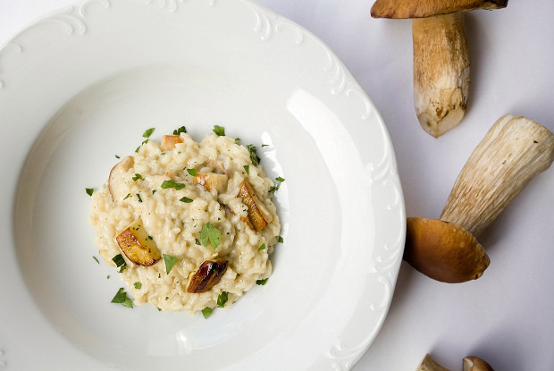
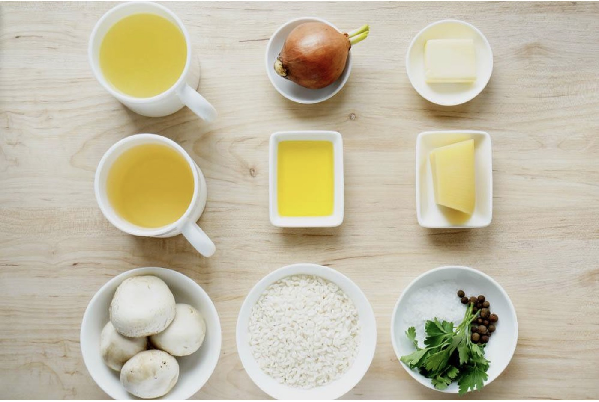
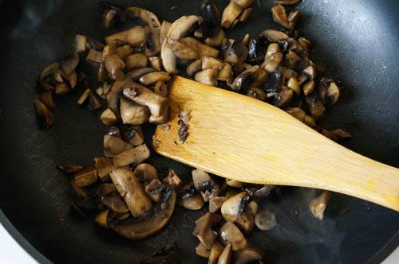
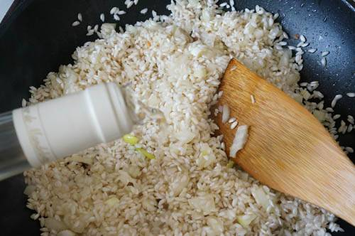

Ризотто с грибами

Рис для ризотто лучше карнароли или виалоне нано (carnaroli и vialone nano). Знаете, можно и арборио взять, но… Я всё же предпочитаю хотя бы в первый раз использовать максимально хорошие ингредиенты, чтобы понять, какое блюдо получится из «первоисточников». А там уже сравнивайте и делайте свои выводы.
- Вот, что нам понадобится:

- Нарезаем любые грибы, несколько штучек сделайте крупными (для украшения), растапливаем сливочное масло и обжариваем минут 5-10. Слишком не увлекайтесь, они потом ещё будут доходить вместе с рисом. Если вы делаете ризотто с другими овощами — просто также доведите их до полуготовности.

- В сковороде растапливаем сливочное масло, добавляем оливковое. Обжариваем очень мелко порезанный лук и чеснок до золотистого цвета, засыпаем рис и продолжаем обжаривать постоянно помешивая, минуты три. Вливаем вино и ждем пока оно выпарится — минут 5-6. Убавляем огонь и половниками вливаем бульон. Он всё время стоит на плите и подбулькивает.

- Если бульон закончился, а рис ещё не готов — смело используйте кипяток. В итоге нам нужно получить слегка сыроватый рис внутри, не кашистый, но крахмалистый снаружи. Итальянцы называют это волной, то есть когда вы проводите лопаткой по сковороде и оставляете сухой след, а рис ложится волнами. Минут за 5 до конца добавляете грибы, зелень, два больших кусочка масла и тёртый пармезан. Хорошенько перемешиваете и раскладываете по тарелкам — тут лучше не медлить.
- Всё очень индивидуально, по постарайтесь в первый раз получить ризотто «волну». Нет, это не каша, нет это не плов и не просто рис с грибами. Это совсем другое блюдо, имеющее сливочно-кремовую текстуру. Масло и пармезан тут как раз играют связующую роль в союзе с рисовым крахмалом.
Bon appetit